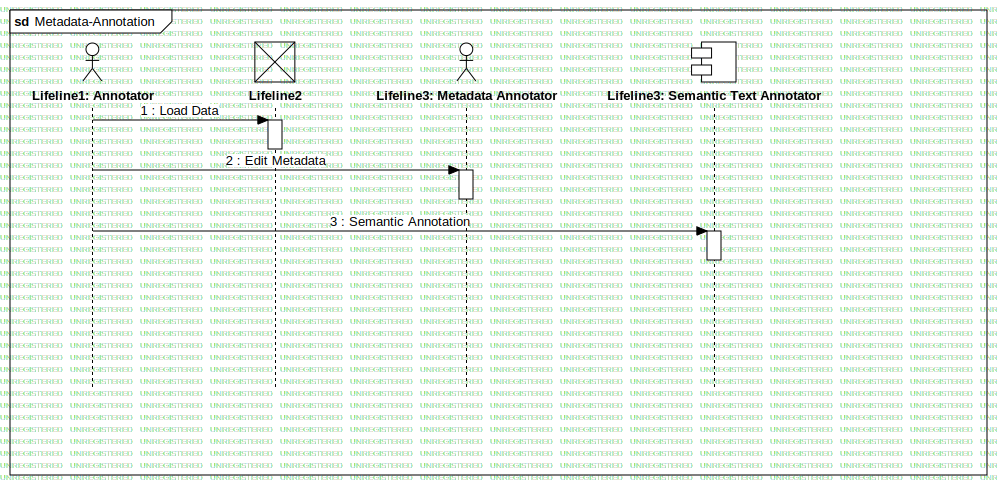

Sequence Annotation
UMLInteraction
RASTA
::
Requirement Analysis
::
OR4 - Basilica di S. Angelo in Formis / Monte Pugliano/Norba
::
Sequence - Annotation
::
Sequence Annotation
Description
none
Diagrams

Metadata-Annotation
Participants
Lifeline1: Annotator
Lifeline2
Lifeline3: Metadata Annotator
Lifeline3: Semantic Text Annotator
Messages
Load Data (Lifeline1→Lifeline2)
Edit Metadata (Lifeline1→Lifeline3)
Semantic Annotation (Lifeline1→Lifeline3)
Properties
Name
Value
name
Sequence Annotation
stereotype
null
visibility
public
isReentrant
true
Owned Elements
Metadata-Annotation